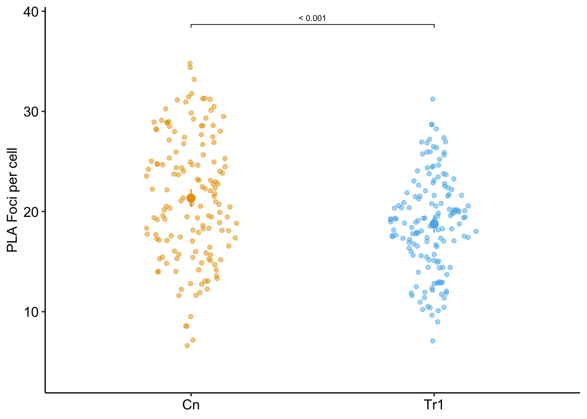
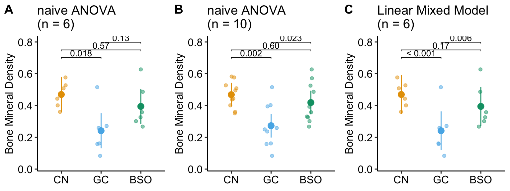
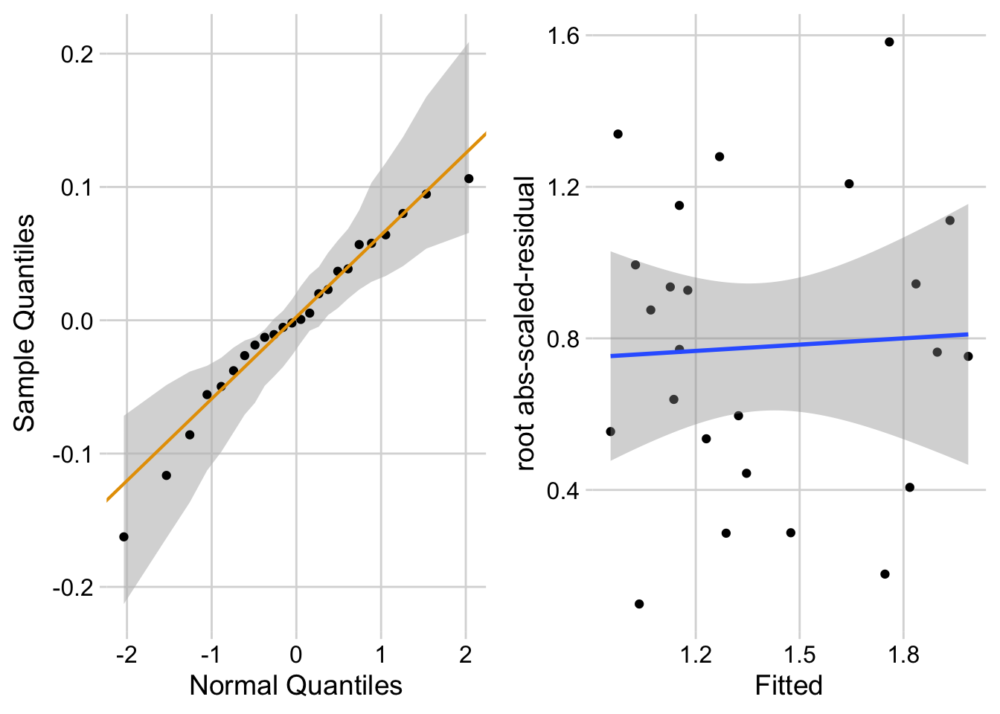
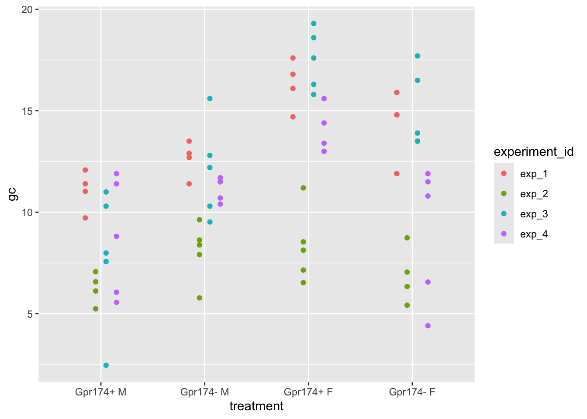

14 Models for non-independence – linear mixed models
Probably no chapter in this book is more important for the best-practice analysis of experimental data than this chapter. Why? Because many if not most experimental data violates the assumption of independence and any analysis using standard t-tests and ANOVA will always lead to quantitative error in inference (confidence intervals and p-values) and often lead to qualitative errors in inference (statements about “significance”). Standard analysis of non-independent data can lead to absurdly liberal inference (the p-values are far lower than the data support), but can also lead to moderately conservative inference (the p-values are higher than the data supports). Liberal inference generates false discovery and lures researchers down dead-end research pathways. Conservative inference steers researchers away from true discovery.
Linear Mixed Models are an extension of linear models that appropriately adjust inferential statistics for non-independent data. Paired t-tests and Repeated Measures ANOVA are classical tests that are special cases of linear mixed models. Linear mixed models are more flexible than these classical tests because the models can include added covariates or more complex models generally. And, linear mixed models can be extended to Generalized Linear Mixed Models for counts, binary responses, skewed responses, and ratios.
Before introducing experimental designs that generate non-independent data and the models used to analyze these, let’s explore two ubiquitous examples, one that leads to liberal inference and one that leads to conservative inference.
14.1 Liberal inference from pseudoreplication
Researchers are interested in regulation and repair of DNA double-stranded breaks and use a proximity ligation assay (PLA) of HeLa cells to investigate the number of damage response events (“foci”) per cell with and without an inhibitor of transcription elongation (DRB). The number of foci in each of fifty cells per treatment is measured. The experiment is replicated three times. The researchers use a t-test to compare the effect of DRB on foci count and naively include all measures in the analysis.
What is naive about the analysis? The fifty measures per cell are technical replicates and the values within a cell are not independent of each other because they share aspects of cell environment not shared by values in other cells. Including technical replicates in an analysis without accounting for this non-independence is a kind of pseudoreplication
To show how this naive analysis results in extremely liberal inference and an increase in false discovery, I simulate this experiment using a case in which there is no effect of DRB treatment, so a low p-value indicates a false-discovery. The simulation is simplified with the two following conditions: 1) the model pretends that count data are normally distributed (this is because we want to focus on pseudoreplication and not a misspecified distribution) and 2) the model pretends that values from each treatment within an experiment are independent (this is because we want to focus on pseudoreplication).
In this naive analysis of the experiment, the researcher finds an effect of treatment with a p-value of 0.000073 and uses this small p-value to justify a decision to move forward with follow-up experiments. But this low p-value is not supported by the data – this discovery is false. This very small p-value is not an example of a “rare event”. In fact, if the researcher repeats the experiment 1000 times, then the median p-value is 0.000195 and 72.3% of the 1000 p-values lead to the same false discovery if 0.05 is used to make the decision to move forward.
While this example is fake, I see this naive analysis a lot: tumor area of multiple tumors per mouse, islet area of multiple islets per mouse, number of vesicles docked to a membrane in multiple cells per mouse, the number of mitochondria in multiple cells per mouse, the number of neurites in multiple neurons in multiple cells per mouse, etc. etc. Indeed, when I’m looking for examples of pseudoreplication to teach, I just look for figures with a bunch of points per treatment – something similar to this plot of the fake data experiment. Regardless, this is a huge source of false discovery that could disappear overnight.
14.2 Conservative inference from failure to identify blocks
Researchers are investigating the regulation of the differentiation of stem blood cells into osteoclasts, which can cause osteoporosis if overactivated. The researchers randomly sample three mice from 6 litters and use a littermate control design: within a litter, one sib is assigned to control (CN), one to glucortacoid (GC) treatment, and one to buthionine sulphoximine (BSO) treatment. The researchers are investigating the mechanism of GC-induced osteoporosis and if the researcher’s model is correct, then BSO should block this mechanism. The response variable is Bone Mineral Density. Following an ANOVA, the researchers report the unadjusted p-value for each pairwise comparison with the expectation that BSO will reverse the effect of GC on Bone Mineral Density.

What is naive about the analysis? Any value measured from sibling mice within a litter are not independent of each other because the sibling mice share aspects of genetics and maternal environment not shared by mice in other litters. This shared variance adds correlated noise to data and failure to account for the shared variance will almost always lead to more conservative inference.
In the experiment, the results “looked” like the expected results if the model GC-induced osteoporosis were correct, but the p-value of the focal contrast (BSO - GC) was not < 0.05 (Figure 14.2 A). The researchers expanded the experiment, adding data from four more litters (Figure 14.2 B). Had the researchers analyzed the initial set of data using a statistical model that accounts for the shared variance within a litter (Figure 14.2 C), the researchers would have been satisfied and fewer mice would have been killed, fewer resources used, and more time to pursue continued probing of the mechanism. The statistical model used to take advantage of the littermate control design is a linear-mixed model. An experiment with littermate control is known as a blocked design.
NHST Blues
NHST encourages peeking at the data to see if p < 0.05 for a focal contrast, and collecting more data if this isn’t the case. Don’t do this. Peeking makes the p-value non-valid and will increase the false discovery rate. Peeking is a variation of the multiple test problem. In clinical trials there are statistically rigorous methods for peeking, which allows a trial to stop early.
The small p-value in the BSO - GC contrast using a linear mixed model is not an example of a “rare event”. In fact, if the researchers repeated the experiment 1000 times, 89.1% of the BSO - GC p-values using the linear mixed model are less than 0.05 while only 29.9% of the p-values following classical ANOVA are less than 0.05.
While this example is fake, I see this naive analysis a lot – littermate controls is very, very common but other examples are too, including replicated experiments (each experiment is a block). There are certain instances where researchers do recognize non-independence and do use a paired t-test but the vast majority of blocked designs (occurring in almost all experimental biology papers) go unrecognized. This is a huge source of failed discovery that could disappear overnight.
14.3 Introduction to models for non-independent data (linear mixed models)
This chapter is about models for correlated error, including linear models with added random factors, which are known as linear mixed models. In classical hypothesis testing, a paired t-test, repeated measures ANOVA, and mixed-effect ANOVA are equivalent to specific cases of linear mixed models. Linear mixed models are used for analyzing data composed of subsets – or batches – of data that were measured from the “same thing”, such as multiple measures within a mouse, or multiple mice within a litter. Batched data results in correlated error, which violates a key assumption of linear models (and their “which test” equivalents) and muddles statistical inference unless the correlated error is modeled, explicitly or implicitly. In some experimental designs (blocked designs), failure to model the correlated error reduces precision and power, contributing to reduced rates of discovery or confirmation. In other designs (nested designs), failure to model the correlated error results in falsely high precision and low p-values, leading to increased rates of false discovery. The falsely high precision is due to pseudoreplication. I think it’s fair to infer from the experimental biology literature, that experimental biologists don’t recognize the ubiquitousness of batched data and correlated error. This is probably the biggest issue in inference in the field (far more of an issue than say, a t-test on non-normal data).
What do I mean by “batch” and how can correlated error both increase and decrease false discovery? Consider an experiment to measure pancreatic islet area with the experimental factor \(\texttt{treatment}\) with levels “Cn” and “Tr”, where “Cn” is the administration of saline and “Tr” is the administration of a drug believed to disrupt the system. While it may seem like the data from this experiment should be analyzed using a t-test, the best practice statistical model actually depends on the experimental design. Experimental design matters because different designs introduce different patterns of correlated error due to shared genetics and environment. Recall that inference from a linear model (including t-tests and ANOVA) assumes independence (Chapter 8) – that is, each response value has no relationship to any other value, other than that due to treatment. Lack of independence results in patterns of correlation among the residuals, or correlated error.
Something like the first experiment below (Design 1) is the necessary design to use the statistics that have been covered in this book to this point, without extreme violation of the independence assumption. But many (most?) experiments in experimental bench biology do not look like the design in Design 1 below. Instead, many (most?) experiments are variants of Designs 2 and 3, both of which have extreme violations of the independence assumption. Design 2 and its variants result in liberal statistics and increased, false discovery rate but, interestingly, Design 3 and its variants (generally) result in conservative statistics and reduced, true discovery rate.

Design 1. The design in Figure 14.3 has a single factor \(\texttt{genotype}\) with two levels (Cn and Tr). Five mice of the same sex, each from a different litter from a unique dam and sire mating, are randomly sampled and assigned to either Cn or Tr. All mice are housed individually (10 cages). The pancreatic tissue from all mice is prepared in a single batch and the area of a single islet is measured from each mouse. The entire experiment is carried out at the same time and each component (tissue preparation, measuring) is carried out by the same person (these could be different people for each component). This is a Completely Randomized Design (CRD). The five replicate mice per treatment are treatment replicates (often called biological replicates in experimental biology). A CRD does not have batched data.

Design 2. The design in Figure 14.4 is exactly like that in Design 1, except that the researchers take ten measures of iselet area per mouse. The ten measures are subsampled replicates. Experimental biologists often call these technical replicates, especially when the multiple measures are taken from the same preparation. Subsampling is a kind of nested design in which one variable is nested within (as opposed to crossed with) another variable. Here, the subsampled variable (subsample_id) is nested within the mouse_id variable. Each mouse is a batch. Each mouse has a unique set of factors that contribute to the error variance of the measures of the response in that mouse. All response measures within a mouse share the component of the error variance unique to that mouse and, as a consequence, the error (residuals) within a mouse are more similar to each other than they are to the residuals between mice

Design 3. In the design in Figure 14.5, two littermates are randomly sampled from five litters, each with a different dam and sire. Within each litter, one mouse is assigned to Cn and a second is assigned to Tr. Each litter is randomly assigned to cage with only a single litter per cage. All other aspects of this design are as in Design 1. This is a Randomized Complete Block Design. The five replicate mice per treatment are the treatment replicates. Each litter/cage combination is a type of batch called a block. A blocked design typically functions to reduce noise in the model fit (this increases power) and to reduce the number of litters and cages needed for an experiment. The two measures of Islet Area within a litter/cage (one per mouse) are not independent of each other. Each cage has two mice from the same litter and these mice share genetic and maternal factors that contribute to mouse anatomy and physiology that are not shared by mice in other litters. Additionally, each cage has a unique set of environmental factors that contribute to the error variance of the measure of the response. Each cage shares a cage-specific history of temperature, humidity, food, light, interactions with animal facilities staff, and behavioral interactions among the mice. All response measures within a litter/cage share the component of the error variance unique to that litter/cage and, as a consequence, the error (residuals) within a litter/cage are more similar to each other than they are to the residuals among litters/cages.
In each of these experiments, there is systematic variation at multiple levels: among treatments due to treatment effects and among batches due to batch effects. Batches come in lots of flavors, including experiment, litter, cage, flask, plate, slide, donor, and individual. The among-treatment differences in means are the fixed effects. The among-batch differences are the random effects. An assumption of modeling random effects is that the batches are a random sample of the batches that could have been sampled. This is often not strictly true as batches are often convenience samples (example: the human donors of the Type 2 diabetes beta cells are those that were in the hospital).
The variation among batches/lack of independence within batches has different consequences on the uncertainty of the estimate of a treatment effect. The batches in Experiment 3 contain both treatments (Cn and Tr). The researcher is interested in the treatment effect but not the variation due to differences among the batches. The batches are nuissance factors that add additional variance to the response, with the consequence that estimates of treatment effects are less precise, unless the variance due to the batches is explicitly modeled. Modeling a batch that contains some or all treatment combinations will increase precision and power.
Batches that contain more than one treatment combination are known as blocks. A block that contains all treatment combinations is a complete block. A block that contains fewer than all combinations is an incomplete block. Including block structure in the design is known as blocking. Blocks are non-experimental factors. Adding a blocking factor to a statistical model is used to increase the precision of an estimated treatment effect. Design 3 is an example of a randomized complete block design.
In Design 2, there are multiple measures per mouse and the design is a Completely Randomized Design with subsampling. The subsampling is not the kind of replication that can be used to infer the among treatment effect because the treatment assignment was not at the level of the subsamples. The treatment replicates are the mice, because it was at this level that treatment assignment was randomized. A statistical analysis of all measures from a subsampled design without modeling the correlated error due to the subsampling is a kind of pseudoreplication. Pseudoreplication results in falsely precise standard errors and false small p-values and, consequently, increased rates of false discovery.
In all of these designs, it is important for the researcher to identify the experimental unit and the measurement unit. The experimental unit is the entity that was randomly assigned the treatment. In all the designs above, the experimental unit is the mouse. In designs 1 and 3, the measurement unit is the mouse. In design 2, the measurement unit is the specific islet that was measured.
Pseudoreplication
In pseudoreplication, the degrees of freedom used to compute the test statistic and the p-value are inflated given the experimental design and research question. An example: A researcher wants to investigate the effect of some protein on mitochondrial biogenesis and designs an experiment with a wildtype (WT) and a conditional knockout (KO) mouse. Mitochondrial counts from twenty cells in one WT mouse and one KO mouse are measured and the researcher uses a t-test to compare counts. The sample size used to compute the standard error in the denominator of the t-value is 20. The t-distribution used to compute the p-value uses 38 df (20 measures times two groups minus two estimated parameters). This is wrong. The df are inflated and the estimate of the standard error of the difference (the denominator of the t-value) is falsely small. The correct sample size for this design is 1 and the correct df is zero. The sample size and df are inflated for this design because the treatment was randomized to mouse and not to cell. Mouse is the experimental unit – the number of experimental units is what gives the degrees of freedom. The df are correct for inference about the two individuals (how compatible are the data and a model of sampling from the same individual?), but not for inference about the effect of genotype. We cannot infer anything about genotype with a sample size of 1, even with 20 measures per mouse, because any effect of treatment is completely confounded with other differences between the two mice.
14.4 Experimental designs in experimental bench biology
Given the basic principles above, let’s consider the kinds of experimental designs seen in experimental bench biology (Figure 14.6). For each of the experimental designs, I give examples with a certain number of treatments (t), blocks (b), treatment replications (r), and subsampled replications (s).
Notation for models
i = 1..t (treatments)
j = 1..b (blocks)
k = 1..r (treatment replications within a block or within a CRD with no block structure)
m = 1..s (subsamples or technical replicates)


14.4.1 Completely Randomized Design (CRD)
The Completely Randomized Design experiment in Figure 14.6 A has a single factor, \(\texttt{treatment}\) with two levels (“Cn” and “Tr”). Five mice are randomly assigned to each treatment level. Each mouse is bred from a different litter and housed in a separate cage. The researchers measure a single value of the response variable from each mouse. The five replicate mice per treatment are the treatment (biological) replicates. The design is completely randomized because there is no subgrouping due to batches. What kinds of subgrouping does this design avoid?
By using a single mouse per litter, there are no litter batches and subsets of mice don’t share litter effects – common litter responses to the Cn or Tr treatments. Each litter has a unique set of factors that contribute to the error variance of the measure of the response. Siblings from the same dam and sire share more genetic variation than non-siblings and this shared genetic variation contributes to phenotypes (including the response to treatment) that are more likely to be similar to each other than to non-siblings. Siblings from the same litter share the same history of maternal factors (maternal effects, including epigenetic effects) specific to the pregnancy and even the history of events leading up to the pregnancy. This shared non-genetic and epigenetic variation contributes to phenotypes (including the response to treatment) that are more likely to be similar to each other than to non-siblings. All response measures within a litter share the genetic, maternal environmental, and epigenetic components of the error variance unique to that litter and, as a consequence, the error (residuals) within a litter are more similar to each other than they are to the residuals between litters.
By housing each mouse in it’s own cage, there is no cage batch and subsets of mice don’t share cage effects – common cage responses to the Cn or Tr treatments. As stated earlier, each cage has a unique set of factors that contribute to the error variance of the measure of the response. Each cage shares a cage-specific history of temperature, humidity, food, light, interactions with animal facilities staff and behavioral interactions among the mice. All response measures within a cage share the component of the error variance unique to that cage and, as a consequence, the error (residuals) within a cage are more similar to each other than they are to the residuals between cages.
Examples:
- Ten mice from separate litters are sampled. Five mice are randomly assigned to control. Five mice are randomly assigned to treatment. A single measure per mouse is taken. Mouse is the experimental unit. \(t=2\), \(b=0\), \(r=5\), and \(s=1\).
- Ten cell cultures are created. Five cultures are randomly assigned to control and five to treatment. A single measure per culture is taken. Culture is the experimental unit. \(t=2\), \(b=0\), \(r=5\), and \(s=1\).
Known Unknowns
While most data from experiments in bench biology are analyzed as if the experimental design is a CRD, a good question is, what fraction of these actually are CRD? We know that many (most?) mouse experiments will have batched measures and correlated responses because most experiments are conducted with multiple mice per litter and/or cage (or equivalents in other model systems). Many cell culture data come from multiple replicates of the whole experiment – the experiment functions as a block. And time series experiments include multiple measures on the same experimental unit over time. Except for time series experiments, researchers in experimental bench biology are using almost exclusively statistical tests that assume independence of errors (the tests appropriate for CRDs). How this mismatch between experimental design and statistical practice affects the rate of false and true discovery in cell and molecular biology is a known unknown.
14.4.2 Completely Randomized Design with Subsampling (CRDS) or “Nested Design”
The Completely Randomized Design with Subsampling experiment in Figure 14.6 B is exactly like the CRD except that the researchers measure multiple values of the response variable from each mouse under the same condition (that is, not different in treatment or time). The multiple measures are subsampled (technical) replicates.
- Do not confuse subsampled replicates with measures of the response under different conditions in the same mouse, for example a measure from one brain slice under the control treatment and a measure from a second brain slice under the drug treatment. This example is a kind of Randomized Complete Block Design, which is outlined next and the core design in this chapter.
- Do not confuse subsampled replicates with a measures of the response at different times in the same mouse, for example, the plasma glucose levels at baseline and at five post-baseline time points. This example is a kind of longitudinal design, which is outlined below and more thoroughly in the chapter Linear models for longitudinal experiments.
- Do not confuse subsampled replicates with measures of different response variables from the same mouse, for example measures of the weights of five different skeletal muscles. This example is a kind of multiple response which is addressed xxx.
The technical replicates are a kind of pseudoreplication. The general linear model y ~ treatment fit to these data, including t-tests and traditional ANOVA, will have falsely high precision and falsely low p-values.
Examples:
- Ten mice from separate litters are sampled. Five mice are randomly assigned to control. Five mice are randomly assigned to treatment. Multiple measures per mouse are taken. Example: five measures of Islet Area are measured in each pancreas. Mouse is the experimental unit. Each of the measures is a technical replicate because the treatment is not randomly assigned to each islet but to the whole mouse. \(t=2\), \(b=0\), \(r=5\), and \(s=5\).
- Ten cell cultures are created. Five cultures are randomly assigned to control and five to treatment. Multiple measures per culture are taken. Example: Mitochondrial counts are measured from five cells in each culture. Culture is the experimental unit. Each of the counts is a technical replicate because the treatment is not randomly assigned to each cell but to the whole culture. \(t=2\), \(b=0\), \(r=5\), and \(s=5\).
Notes:
- Subsampling can occur at multiple levels. Example: Ten mice from separate litters are sampled. Five mice are randomly assigned to control. Five mice are randomly assigned to treatment. Five neurons in a slice of brain tissue are identified in each mouse. From each neuron, the length of five dendrite spines are measured. The five measures of spine length are “nested within” neuron and the five neurons are “nested within” mouse. Nested subsampling can quickly lead to massive pseudoreplication and false discovery.
14.4.3 Randomized Complete Block Design (RCBD)
The Randomized Complete Block Design experiment in Figure 14.6 C is similar to the CRD except that all treatment combinations (two here) are randomly assigned to sibling mice within a litter. Here, two mice from each litter are randomly selected and one is randomly assigned to “Cn” and the other to “Tr”. Each litter is randomly assigned to a unique cage. The researchers measure a single value of the response variable from each mouse. The five replicate mice per treatment are the treatment replicates. The litters (or cage) are the blocks. In this design, litter and cage effects are confounded but this has no consequence on the statistical model and inference unless the researchers want to explicitly estimate these effects separately. Compared to the CRD, this design requires fewer resources (five litters instead of ten, five cages instead of ten). Compared to the general linear model fit to data from the CRD (y ~ treatment), including t-tests and traditional ANOVA, the linear mixed model fit to the RCBD has increased precision and power. While many researchers seem to be designing experiments similar to this (“littermate controls”), most are failing to fit a statistical model that accounts for the batching and taking advantage of the increased precision and power.
Examples:
- Ten mice are sampled. In each mouse, one forelimb is assigned to control and the other forelimb is assigned to treatment. Only a single measure on each side is taken. Limb is the experimental unit. Mouse is a block. \(t=2\), \(b=10\), \(r=1\), and \(s=1\).
- Ten litters are sampled. In each litter, one sib is assigned to control and the other sib is assigned to treatment. Only a single measure on each sib is taken. Mouse is the experimental unit. Litter is a block. \(t=2\), \(b=10\), \(r=1\), and \(s=1\).
- Two mice, each from a separate litter are sampled. One is randomly assigned to control and the other to treatment. Only a single measure of the response variable is taken per mouse. The experiment is replicated five times (five different days, each with a newly made set of reagents and machine calibrations). Mouse is the experimental unit. Experiment is a block. \(t=2\), \(b=5\), \(r=1\), and \(s=1\).
14.4.4 Randomized Split Plot Design (RSPD)
The Randomized Split Plot Design experiment in Figure 14.6 D is similar to the RCBD except that there is now a second experimental factor that is crossed with the first experimental factor. An individual mouse acts as single experimental unit for one factor (here, \(\texttt{genotype}\) with levels “WT” and “KO”) but acts as a block for the second experimental factor (here, \(\texttt{treatment}\) with levels “Cn” and “Tr”). The first factor (\(\texttt{genotype}\)) is the main plot – the levels of the factor are randomly assigned to the main plots. The second factor (\(\texttt{treatment}\)) is the subplot – the levels of this factor are randomly assigned to the subplots. \(\texttt{Litter}\) is a replicated block. Also in Figure 14.6 D, a 2 x 2 RCBD with the same two experimental factors is shown for comparison. In the 2 x 2 RCBD, four mice per block (litter) are each randomly assigned one of the 2 x 2 combinations of \(\texttt{genotype}\) and \(\texttt{treatment}\)).
14.4.5 Generalized Randomized Complete Block Design (GRCBD)
The Generalized Randomized Complete Block Design experiment in Figure 14.6 E is similar to the RCBD except that two treatment replicates per block (litter/cage) are assigned.
Important and somewhat not intuitive Because the treatment replicates within a litter share common error variance, these do not act like independent replicates. One consequence of this is, the sample size (\(n\)) is five and not ten (\(litters \times treatment replicates\)). The general linear model y ~ treatment fit to these data, including t-tests and traditional ANOVA, will generally have falsely high precision and falsely low p-values.
14.4.6 Nested Randomized Complete Block Design (NRCBD)
The Nested Randomized Complete Block Design experiment in Figure 14.6 F is similar to the RCBD except that there are now replicated experiments. This is a nested block design with litter (a block) nested within experiment (a block).
14.4.7 Longitudinal Randomized Complete Block Design (LRCBD)
The Longitudinal Randomized Complete Block Design experiment in Figure 14.6 G is similar to the RCBD except that there are multiple measures of the response variable taken, each taken at a different time point, including baseline (time zero).
14.4.8 Variations due to multiple measures of the response variable
Similar to the CRDS above, the other basic designs can include subsampling, resulting in, for example, RCBDS or RSPDS. If there is subsampling within subsampled units, then we can designated these with “SS”, for example RCBDSS.
Similar to the LRCBD above, the other basic designs can include longitudinal sampling, resulting in, for example, LCRD or LRSPD.
14.5 Building the linear (mixed) model for clustered data
Notation
- i = 1..t (treatments)
- j = 1..b (blocks)
- k = 1..r (experimental replications within a block)
- m = 1..s (subsamples or technical replicates)
\[y_i = \beta_0 + \beta_i treatment_i + (\gamma_j block_j) + (\gamma_{ij} block_j treatment_i) + \varepsilon\]
14.6 Statistical models for experimental designs
14.6.1 Models for Completely Randomized Designs (CRD)
lm0 <- lm(y ~ treatment,
data = figx)14.6.2 Models for batched data (CRDS, RCBD, RSPD, GRCBD, NRCBD)
14.6.2.1 Linear models
14.6.2.1.1 fixed effect model
lm1 <- lm(y ~ treatment + block,
data = figx)14.6.2.1.2 linear model of batch means
figx_means <- figx[, .(y = mean(y)),
by = .(treatment, batch)]
lm2 <- lm(y ~ treatment,
data = figx_means)14.6.2.2 linear mixed models (“random effects” models)
14.6.2.2.1 Random intercept model
lmm1 <- lmer(y ~ treatment + (1 | block),
data = figx)14.6.2.2.3 random intercept and slope model
lmm3 <- lmer(y ~ treatment + (treatment | block),
data = figx)14.6.2.2.4 random interaction intercept model
lmm4 <- lmer(y ~ treatment + (1 | block) + (1 | block:treatment),
data = figx)14.6.2.2.5 random interaction model with subsampling
lmm5 <- lmer(y ~ treatment + (1 | block) + (1 | block:treatment) + (1 | block:treatment:replicate),
data = figx)14.6.2.2.6 CRD split plot model
# tr1 is the main plot
# tr2 is the subplot
# main_plot is tr1:rep, where rep is the rep id
lmm6 <- lmer(y ~ tr1 * tr2 + (1 | main_plot),
data = figx)14.6.2.2.7 RCBD split plot model
# tr1 is the main plot
# tr2 is the subplot
# main_plot is tr1:block
lmm7 <- lmer(y ~ tr1 * tr2 + (1 | block) + (1 | block:tr1),
data = figx)
lmm7 <- lmer(y ~ tr1 * tr2 + block + (1 | block:tr1),
data = figx)
# the two versions are numerically equivalent14.6.2.3 ANOVA models (“mixed models”, “repeated measures ANOVA”)
14.6.2.3.1 Multivariate repeated measures ANOVA
aov1 <- aov_4(y ~ treatment + (treatment | block),
data = figx)14.6.2.3.2 Univariate repeated measures ANOVA
aov2 <- aov_4(y ~ treatment + (treatment | block),
include_aov = TRUE,
data = figx)14.6.2.3.3 Pairwise paired, t-tests
pptt <- pairwise_t_tests(y_col = "y",
g_col = "treatment",
id_col = "block",
data = figx)14.7 Which model and why?
14.7.1 CRD
- No batch to model!
14.7.2 CRDS
- lmm1 – random intercept model
- lm2 – linear model of batch means
Notes
- These are numerically equivalent and should result in same estimates, SE, CIs, and p-values
- These are equivalent to a Nested t-test or Nested ANOVA
14.7.3 RCBD
Reasonable models:
- lmm1 – random intercept model
- lmm2 – lmm for correlated error
- lm1 – fixed effect model
- aov1 – multivariate RM-ANOVA
- aov2 – univariate RM-ANOVA
- pptt – pairwise, paired t-test
(Cannot use lmm3 or lmm4 because there is no replication of each block:treatment combination.)
Assumptions:
- lmm1, lm1, and aov2 assume
- compound symmetry.
- sphericity.
- lmm2, aov1, and pptt do not assume compound symmetry and sphericity.
Notes:
- lmm1 is the standard. If the number of treatments = 2, then lmm1 is eqivalent with a paired t-test.
- If the design is balanced (all blocks have a single value for both treatments) AND the number of treatments = 2 then all six methods are numerically equivalent.
- If the design is balanced AND the number of treatments > 2, then
- lmm1, lm1, and aov2 are numerically equivalent
- lmm2, aov1, pptt result in the same estimates and SE but lmm2 has more df, so the CIs, and p-values of lmm2 are less conservative.
- If the number of treatments = 2 AND the design is not balanced (at least one block is missing value for one treatment level) then the linear models (lm1, aov1, aov2, pptt) are equivalent but the linear mixed models (lmm1, lmm2) differ from each other and from the linear models.
- If a treatment within a block is missing, the whole block is deleted in the RM-ANOVA models. This reduces power (the loss of power depends partly on the number of missing values).
- If a treatment within a block is missing, the block is deleted only in the comparisons including the missing treatment in the pairwise, paired t-tests. This makes pptt more powerful than aov1.
- the lmm models are very flexible – covariates can be added or these can be used as generalized lmms for non-normal distributions.
- the lmm models and especially lmm2 sometimes (often?) fail to converge, especially with small samples (small number of blocks) or if the among-block component of variance is small.
Performance:
| Contrast | Cor Error | lm0 | lm1 | aov1 | aov2 | pptt | lmm2 |
|---|---|---|---|---|---|---|---|
| sim 1 - high correlated error | |||||||
| Cn, Tr1 | 0.299 | 0.047 | 0.110 | 0.058 | 0.110 | 0.058 | 0.068 |
| Cn, Tr2 | 0.412 | 0.027 | 0.090 | 0.052 | 0.090 | 0.052 | 0.070 |
| Tr1, Tr2 | 0.662 | 0.000 | 0.005 | 0.063 | 0.005 | 0.063 | 0.070 |
| sim 2 - low correlated error | |||||||
| Cn, Tr1 | 0.165 | 0.044 | 0.072 | 0.055 | 0.072 | 0.055 | 0.063 |
| Cn, Tr2 | 0.164 | 0.051 | 0.077 | 0.060 | 0.077 | 0.060 | 0.076 |
| Tr1, Tr2 | 0.238 | 0.016 | 0.028 | 0.062 | 0.028 | 0.062 | 0.079 |
| sim 3 - equal correlated error | |||||||
| Cn, Tr1 | 0.771 | 0.001 | 0.057 | 0.058 | 0.057 | 0.058 | 0.069 |
| Cn, Tr2 | 0.773 | 0.001 | 0.049 | 0.056 | 0.049 | 0.056 | 0.067 |
| Tr1, Tr2 | 0.769 | 0.002 | 0.056 | 0.056 | 0.056 | 0.056 | 0.074 |
| sim 4 - zero correlated error | |||||||
| Cn, Tr1 | 0.025 | 0.050 | 0.047 | 0.042 | 0.047 | 0.042 | 0.061 |
| Cn, Tr2 | 0.010 | 0.054 | 0.054 | 0.046 | 0.054 | 0.046 | 0.061 |
| Tr1, Tr2 | 0.000 | 0.056 | 0.060 | 0.053 | 0.060 | 0.053 | 0.076 |
- aov1, pptt, and lmm2 have well-behaved type I error rates (lmm2 is a little anti-conservative) regardless of correlation structure – False discoveries should be well controlled.
- lm1, lmm1, and aov2 have poorly-behaved type I error rates when there is a block:treatment interaction (sim 1 and 2), resulting in heterogenous correlation structure (remember that this is moot when there are only two treatment levels) – this consequence is small when the block and block:treatment variance is small (small correlations in residuals). When there is block:treatment interaction, these models are conservative in contrasts associated with large residual correlation, resulting in low power, and anti-conservative in contrasts associated with small residual correlations. resulting in high false discovery rates.
Best Practices:
- If the number of treatments = 2 and
- the design is balanced: it doesn’t matter which method you use.
- the design is not balanced: use lmm1 or lmm2
- If the number of treatments > 2 and
- the design is balanced: use aov1/pptt (these are numerically equivalent). lmm1 is the standard but it assumes equal correlated error among treatment levels and equal standard errors among contrasts. lmm2 explicitly models heterogeneity of correlations and variances but 1) the model often fails and 2) has slightly anti-conservative Type I error.
- the design is not balanced: lmm2 is attractive if the model runs. pptt is attractive if there are few missing values.
- If there are covariates, then start with lmm2. Use lmeControl if lmm2 fails. If this fails, use pairwise lmm1, which is the same as pairwise t-tests but allows covariates to be added to the model. Note that the covariate will be modeled independently in each pair, which effectively models the consequence of a treatment:covariate interaction.
14.7.4 RSPD
Reasonable models:
- lmm4 – random interaction intercept model
Assumptions:
Notes:
Performance:
| sim_id | sig_block | sig_ss | sig_main | sig_sub | contrast | r | lm0 | lm1 | lmm1 | lmm3 | lmm4 | lmm5 | lmm6 |
|---|---|---|---|---|---|---|---|---|---|---|---|---|---|
| sim 1 - block:main plot | |||||||||||||
| 1 | 0.8 | 0.5 | 0.6 | 0.0 | main | 0.494 | 0.010 | 0.199 | 0.087 | 0.051 | 0.052 | 0.083 | 0.054 |
| 1 | 0.8 | 0.5 | 0.6 | 0.0 | sub | 0.783 | 0.000 | 0.052 | 0.011 | 0.052 | 0.052 | 0.011 | 0.052 |
| sim 2 - block:sub plot | |||||||||||||
| 2 | 0.8 | 0.5 | 0.0 | 0.6 | main | 0.782 | 0.000 | 0.002 | 0.003 | 0.002 | 0.003 | 0.042 | 0.041 |
| 2 | 0.8 | 0.5 | 0.0 | 0.6 | sub | 0.497 | 0.008 | 0.053 | 0.066 | 0.068 | 0.065 | 0.050 | 0.053 |
| sim 3 - block:main + block:sub | |||||||||||||
| 3 | 0.8 | 0.5 | 0.6 | 0.4 | main | 0.549 | 0.007 | 0.111 | 0.062 | 0.038 | 0.039 | 0.068 | 0.054 |
| 3 | 0.8 | 0.5 | 0.6 | 0.4 | sub | 0.689 | 0.001 | 0.056 | 0.026 | 0.057 | 0.056 | 0.024 | 0.054 |
| sim 4 - block only | |||||||||||||
| 4 | 0.8 | 0.5 | 0.0 | 0.0 | main | 0.707 | 0.002 | 0.049 | 0.049 | 0.044 | 0.045 | 0.056 | 0.054 |
| 4 | 0.8 | 0.5 | 0.0 | 0.0 | sub | 0.704 | 0.002 | 0.057 | 0.055 | 0.061 | 0.060 | 0.052 | 0.059 |
14.7.5 RCBDS
- lmm3 – random intercept and slopes model
- lmm4 – random interaction intercept model
- lmm1 – random intercept model on batch means
- lmm2 – lmm for correlated error on batch means
- aov1 – multivariate RM-ANOVA
- aov2 – univariate RM-ANOVA
- pptt – pairwise, paired t-test
Notes
- lmm3 is the “maximal model” – it fits the most parameters and has the fewest assumptions. lmm1 on the full data is the minimal model. I’m not recommending this at all as this is pseudoreplication and will result in very anti-conservative inference. lmm4 is less conservative than lmm3 (and makes more assumptions).
- lmm1 and lmm2 here are the models for RCBD designs but using the aggregated data - that is the subsampled replicates within a batch (block:treatment combination) are averaged.
- If design is balanced
- lmm3 and aov1 result in same estimates, SE, CIs, and p-values
- lmm4, lmm1, and aov2 result in same estimates, SE, CIs, and p-values
- lmm2 has same estimates and SE as lmm3/aov1 but more df so less conservative
- If a treatment within a block is missing, the whole block is deleted in the RM-ANOVA models. This reduces power
- the lmm models are very flexible – covariates can be added or these can be used as generalized lmms for non-normal distributions.
- the lmm models, and especially lmm2 and lmm3, sometimes (often?) fail to converge, especially with small samples (small number of blocks) or if within block correlation is small
- lmm1, lmm4, and aov2 will be less conservative (more power but at higher type I error/false positive rate)
Best practices
- If balanced and no covariates then use lmm3/lmm2/aov1 if discovery is expensive (want to avoid false positives) or lmm4/aov2/lmm1 if discovery is cheap (can afford false positives). lmm2 is less conservative than lmm3/aov1. Use lmm3 if interested in the variance at different levels and/or covariance structure.
- If unbalanced, or if there are covariates, then start with lmm3 or lmm2. Use lmeControl if lmm2 fails. If these fail, go to 1.
14.7.6 GRCBD
- lmm3 – random intercept and slopes model
- lmm4 – random interaction intercept model
- lmm1 – random intercept model on block:treatment means
- lmm2 – lmm for correlated error on block:treatment means
- aov1 – multivariate RM-ANOVA
- aov2 – univariate RM-ANOVA
- lm1 – fixed effect model on all data
- pptt – pairwise, paired t-test on block:treatment means
14.7.7 GRCBDS
- lmm3 – random intercept and slopes model
- lmm4 – random interaction intercept model
- lmm1 – random intercept model on block:treatment means
- lmm2 – lmm for correlated error on block:treatment means
- aov1 – multivariate RM-ANOVA
- aov2 – univariate RM-ANOVA
- lm1 – fixed effect model on all block:treatment:rep means
- pptt – pairwise, paired t-test on block:treatment:rep means
14.8 Example 2: RCBD with >2 groups (classical equivalent: repeated measures ANOVA) (fig6g)
This example introduces linear mixed models for batches that contain all treatment levels of a single factor but no subsampling replication. In this example, the batch is the individual mouse (\(\texttt{mouse\_id}\)). There are four measures of the response variable on each mouse, one measure per treatment level. When there is no subsampling replication, we cannot add a random slope to the model because there is only a single observation at each treatment level and a slope would fit the point at the reference level and the point at the non-reference level perfectly. However, we can explicitly model variation in the correlated error and heterogeneity in the variances among treatments as an alternative to modeling a random slope.
Reversing a model of Parkinson’s disease with in situ converted nigral neurons
Source figure: Fig. 6g
Source data: Source Data Fig. 6
14.8.1 Understand the data
In this study, the researchers investigated the effectiveness of knocking down the protein PTBP1 to induce astrocytes to convert to neurons in a motor processing region of the brain. Experimental lesions of this region of the brain is a model of Parkinson’s disease. In Experiment 6g, the researchers
- Generated a lesion in the motor processing region using 6-hydroxydopamine (6-OHDA). The lesion disrupts the ability to control the contralateral (opposite side) forelimb.
- One month after the lesion, measured the percent of ipsilateral (same side) forepaw touches (the forelimb extending out and touching the surface) in a test of exploration in a new environment (the “cylinder test”). The expected percent in an intact mouse is 50%. In a lesioned mouse, the percent should be much greater than 50% since there is less control of the contralateral limb. The measure at this point is in the treatment “Lesion”. This is the positive control.
- Converted astrocytes in the lesion to functional neurons by knocking down PTBP1.
- Two months after knockdown, gave the mouse saline and remeasured percent ipsilateral touches in a cylinder test. If the knockdown worked as expected, there should be closer to 50% ipsilateral touches. The measure at this point is in the treatment “Saline”. The comparison with Lesion is a focal test.
- Inhibited neuron action in the converted neurons using clozapine-N-oxide (CNO), which suppresses neuron electrical activity. Then, remeasured percent ipsilateral touches in a cylinder test. If the CNO worked as expected, there should be much greater than 50% ipsilateral touches since there should be re-loss of control of the contralateral limb. The measure at this point is in the treatment “CNO”. The comparison with Saline is a focal test.
- Allowed three days for the CNO to degrade, then, remeasured percent ipsilateral touches in a cylinder test. If the CNO degraded as expected, the converted neurons should be functional and there should be closer to 50% ipsilateral touches. The measure at this point is in the treatment “Post_CNO”. The comparison with CNO is a focal test.
The design is \(4 \times 1\) – a single treatment with four levels (“Lesion”, “Saline”, “CNO”, “Post_CNO”)
The planned contrasts are
- Saline - Lesion. This measures the effect of the knockdown and conversion of astrocytes to functional neurons.
- CNO - Saline. This measures the effect of inhibiting the converted neurons to test if it was these and not some other neurons that account for the effect in contrast 1.
- Post_CNO - CNO. This is probing the same expectation as contrast 2.
14.8.2 Model fit and inference
14.8.2.1 Fit the model
fig6g_m1a <- lmer(touch ~ treatment + (1|mouse_id), data = fig6g)
# alt model
fig6g_m1b <- lme(touch ~ treatment,
random = ~1|mouse_id,
correlation = corSymm(form = ~ 1 | mouse_id),
weights = varIdent(form = ~ 1 | treatment),
data = fig6g)
AIC(fig6g_m1a, fig6g_m1b)Warning in AIC.default(fig6g_m1a, fig6g_m1b): models are not all fitted to the
same number of observations df AIC
fig6g_m1a 6 191.3367
fig6g_m1b 15 198.3888# report model a
fig6g_m1 <- fig6g_m1afig6g_m1b overparameterizes, report fig6g_m1a (see Alternative models for fig6g below)
14.8.2.2 Inference from the model
fig6g_m1_coef <- cbind(coef(summary(fig6g_m1)),
confint(fig6g_m1)[-c(1:2),])
# exp5c_m1_coef %>%
# kable(digits = c(2,3,1,1,4,2,2)) %>%
# kable_styling()fig6g_m1_emm <- emmeans(fig6g_m1, specs = c("treatment"))| treatment | emmean | SE | df | lower.CL | upper.CL |
|---|---|---|---|---|---|
| Lesion | 83.3 | 3.44 | 18.9 | 76.1 | 90.47 |
| Saline | 62.8 | 3.44 | 18.9 | 55.5 | 69.96 |
| CNO | 81.4 | 3.44 | 18.9 | 74.2 | 88.63 |
| Post_CNO | 58.8 | 3.44 | 18.9 | 51.6 | 66.00 |
# fig6g_m1_emm # print in console to get row numbers
# set the mean as the row number from the emmeans table
lesion <- c(1,0,0,0)
saline <- c(0,1,0,0)
cno <- c(0,0,1,0)
post_cno <- c(0,0,0,1)
fig6g_m1_planned <- contrast(fig6g_m1_emm,
method = list(
"Saline - Lesion" = c(saline - lesion),
"CNO - Saline" = c(cno - saline),
"Post_CNO - CNO" = c(post_cno - cno)
),
adjust = "none"
) %>%
summary(infer = TRUE)| contrast | estimate | SE | df | lower.CL | upper.CL | t.ratio | p.value |
|---|---|---|---|---|---|---|---|
| Saline - Lesion | -20.52 | 4.071 | 18 | -29.07 | -11.96 | -5.04 | 0.00009 |
| CNO - Saline | 18.67 | 4.071 | 18 | 10.12 | 27.23 | 4.59 | 0.00023 |
| Post_CNO - CNO | -22.63 | 4.071 | 18 | -31.18 | -14.08 | -5.56 | 0.00003 |
14.8.2.3 Plot the model

14.8.2.4 Alternaplot the model

14.9 Example 3 – RCBD with two factors (exp5c)
Example 3 is similar to example 2 in that there is no subsampling replication and we cannot add random slopes to the linear mixed model. Example 3 differs in that the design is factorial – there are two, crossed fixed factors. Consequently, there are several alternative models with different sets of random intercepts. The reported model includes two random intercepts, one of which models differences in batch effects among treatment levels (treatment by batch interactions). This interaction intercept is an alternative to random slope for modeling treatment by batch interactions.
Transcriptomic profiling of skeletal muscle adaptations to exercise and inactivity
Source figure: Fig. 5c
Source data: Source Data Fig. 5
New names:
• `` -> `...1`
• `` -> `...2`
• `` -> `...3`
• `` -> `...4`
• `` -> `...5`
• `` -> `...6`
• `` -> `...7`
• `` -> `...8`
• `` -> `...9`
• `` -> `...10`
• `` -> `...11`
• `` -> `...12`
• `` -> `...13`14.9.1 Understand the data
The data for Example 1 are from Figure 5c. Six muscle source cells were used to start six independent cultures. Cells from each culture were treated with either a negative control (“Scr”) or a siRNA (“siNR4A3”) that “silences” expression of the NR4A3 gene product by cleaving the mRNA. Glucose uptake in the two cell types was measured at rest (“Basal”) and during electrical pulse stimulation (“EPS”).
The design is a \(2 \times 2\) Randomized complete block with no subsampling. There are two factors each with two levels: \(\texttt{treatment}\) (“Scr”, “siNR4A3”) and \(\texttt{activity}\) (“Basal”, “EPS”). Each source cell is a block. All four treatment combinations were measured once per block.
14.9.2 Examine the data

The plot shows a strong donor effect.
14.9.3 Model fit and inference
exp5c_m1a <- lmer(glucose_uptake ~ treatment * activity +
(1 | donor),
data = exp5c)
exp5c_m1b <- lmer(glucose_uptake ~ treatment * activity +
(1 | donor) +
(1 | donor:treatment) +
(1 | donor:activity),
data = exp5c)boundary (singular) fit: see help('isSingular')exp5c_m1c <- lmer(glucose_uptake ~ treatment * activity +
(1 | donor) +
(1 | donor:treatment),
data = exp5c)
exp5c_m1d <- lme(glucose_uptake ~ treatment * activity,
random = ~ 1 | donor,
correlation = corSymm(form = ~ 1 | donor),
weights = varIdent(form = ~ 1|t.by.a),
data = exp5c)
# check AIC
AIC(exp5c_m1a, exp5c_m1b, exp5c_m1c, exp5c_m1d)Warning in AIC.default(exp5c_m1a, exp5c_m1b, exp5c_m1c, exp5c_m1d): models are
not all fitted to the same number of observations df AIC
exp5c_m1a 6 8.153813
exp5c_m1b 8 10.052676
exp5c_m1c 7 8.052676
exp5c_m1d 15 14.763024# check VarCorr model c
VarCorr(exp5c_m1c) # fine Groups Name Std.Dev.
donor:treatment (Intercept) 0.089519
donor (Intercept) 0.352097
Residual 0.090685# report 1c (based on AIC and VarCorr check)
exp5c_m1 <- exp5c_m1cexp5c_m1b (equivalent to univariate repeated measures ANOVA) is singular fit. don’t use. Trivial difference in AIC between exp5c_m1a and exp5c_m1c. Nothing in VarCorr with exp5c_m1c raises red flags. Report exp5c_m1c.
14.9.3.1 Check the model
ggcheck_the_model(exp5c_m1)boundary (singular) fit: see help('isSingular')
boundary (singular) fit: see help('isSingular')
boundary (singular) fit: see help('isSingular')
boundary (singular) fit: see help('isSingular')
boundary (singular) fit: see help('isSingular')
boundary (singular) fit: see help('isSingular')
boundary (singular) fit: see help('isSingular')
boundary (singular) fit: see help('isSingular')Warning in rlm.default(x, y, weights, method = method, wt.method = wt.method, :
'rlm' failed to converge in 20 stepsboundary (singular) fit: see help('isSingular')
boundary (singular) fit: see help('isSingular')
boundary (singular) fit: see help('isSingular')
boundary (singular) fit: see help('isSingular')
boundary (singular) fit: see help('isSingular')
boundary (singular) fit: see help('isSingular')
boundary (singular) fit: see help('isSingular')
boundary (singular) fit: see help('isSingular')Warning in rlm.default(x, y, weights, method = method, wt.method = wt.method, :
'rlm' failed to converge in 20 stepsboundary (singular) fit: see help('isSingular')
boundary (singular) fit: see help('isSingular')
boundary (singular) fit: see help('isSingular')Warning: Model failed to converge with 1 negative eigenvalue: -8.3e-02boundary (singular) fit: see help('isSingular')Warning: Using `size` aesthetic for lines was deprecated in ggplot2 3.4.0.
ℹ Please use `linewidth` instead.`geom_smooth()` using formula = 'y ~ x'
fine.
14.9.3.2 Inference from the model
exp5c_m1_coef <- cbind(coef(summary(exp5c_m1)),
confint(exp5c_m1)[-c(1:3),])exp5c_m1_coef %>%
kable(digits = c(2,3,1,1,4,2,2)) %>%
kable_styling()| Estimate | Std. Error | df | t value | Pr(>|t|) | 2.5 % | 97.5 % | |
|---|---|---|---|---|---|---|---|
| (Intercept) | 1.34 | 0.153 | 5.8 | 8.8 | 0.0001 | 1.02 | 1.66 |
| treatmentsiNR4A3 | 0.08 | 0.074 | 8.5 | 1.1 | 0.2994 | -0.07 | 0.23 |
| activityEPS | 0.15 | 0.052 | 10.0 | 2.9 | 0.0163 | 0.05 | 0.25 |
| treatmentsiNR4A3:activityEPS | -0.27 | 0.074 | 10.0 | -3.6 | 0.0048 | -0.41 | -0.12 |
exp5c_m1_emm <- emmeans(exp5c_m1, specs = c("treatment", "activity"))| treatment | activity | emmean | SE | df | lower.CL | upper.CL |
|---|---|---|---|---|---|---|
| Scr | Basal | 1.34 | 0.153 | 5.8 | 0.96 | 1.72 |
| siNR4A3 | Basal | 1.42 | 0.153 | 5.8 | 1.04 | 1.80 |
| Scr | EPS | 1.49 | 0.153 | 5.8 | 1.11 | 1.87 |
| siNR4A3 | EPS | 1.31 | 0.153 | 5.8 | 0.93 | 1.68 |
# exp5c_emm # print in console to get row numbers
# set the mean as the row number from the emmeans table
scr_basal <- c(1,0,0,0)
siNR4A3_basal <- c(0,1,0,0)
scr_eps <- c(0,0,1,0)
siNR4A3_eps <- c(0,0,0,1)
exp5c_m1_planned <- contrast(exp5c_m1_emm,
method = list(
"(Scr EPS) - (Scr Basal)" = c(scr_eps - scr_basal),
"(siNR4A3 EPS) - (siNR4A3 Basal)" = c(siNR4A3_eps - siNR4A3_basal),
"Interaction" = c(siNR4A3_eps - siNR4A3_basal) -
c(scr_eps - scr_basal)
),
adjust = "none"
) %>%
summary(infer = TRUE)| contrast | estimate | SE | df | lower.CL | upper.CL | t.ratio | p.value |
|---|---|---|---|---|---|---|---|
| (Scr EPS) - (Scr Basal) | 0.15 | 0.052 | 10 | 0.03 | 0.27 | 2.88 | 0.016 |
| (siNR4A3 EPS) - (siNR4A3 Basal) | -0.12 | 0.052 | 10 | -0.23 | 0.00 | -2.22 | 0.051 |
| Interaction | -0.27 | 0.074 | 10 | -0.43 | -0.10 | -3.61 | 0.005 |
14.9.3.3 Plot the model

14.9.3.4 Alternaplot the model

Notes
- Many researchers might look at the wide confidence intervals relative to the short distance between the means and think “no effect”. The confidence intervals are correct, they simply are not meant to be tools for inferring anything about differences in means. This is one of many reasons why plots of means and error bars can be misleading for inference, despite the ubiquity of their use for communicating results. And, its why I prefer the effects-and-response plots, which explicitly communicate correct inference about effects.
14.9.4 Why we care about modeling batch in exp5c
Figure @ref(fig:lmm-exp5c-why) shows the modeled means of the four treatment combinations and the individual values colored by donor. It is pretty easy to see that the glucose uptake values for donors 4 and 5 are well above the mean for all four treatments. And, the values for donors 1, 2, and 3 are well below the mean for all four treatments. The values for donor 6 are near the mean for all four treatments.

Let’s compare the effects estimated by the linear mixed model exp5c_m1 with a linear model that ignores donor.
exp5c_m2 <- lm(glucose_uptake ~ treatment * activity,
data = exp5c)
Figure @ref(fig:lmm-exp5c-why2)A is a plot of the effects from the linear mixed model that models the correlated error due to donor. Figure @ref(fig:lmm-exp5c-why2)B is a plot of the effects from the fixed effect model that ignores the correlated error due to donor. Adding \(\texttt{donor}\) as a factor to the linear model increases the precision of the estimate of the treatment effects by eliminating the among-donor component of variance from the error variance.
14.10 Example 4 – RCBDS Experiments with subsampling replication (exp1g)
This example is from a design with batches (independent experiments) that contain all treatment levels of a single factor and subsampling replication. These data were used to introduce linear mixed models in Example 1. The design of the experiment is \(2 \times 2\) factorial. Example 1 flattened the analysis to simplify explanation of random intercepts and random slopes. Here, the data are analyzed with a factorial model.
A GPR174–CCL21 module imparts sexual dimorphism to humoral immunity
Source figure: Fig. 1g
Source data: Source Data Fig. 1
14.10.1 Understand the data
The researchers in this paper are interested in discovering mechanisms causing the lower antibody-mediated immune response in males relative to females. The data in Fig. 1 are from a set of experiments on mice to investigate how the G-protein coupled receptor protein GPR174 regulates formation of the B-cell germinal center in secondary lymph tissue. GPR174 is a X-linked gene.
Response variable \(\texttt{gc}\) – germinal center size (%). The units are the percent of cells expressing germinal center markers.
Factor 1 – \(\texttt{sex}\) (“M”, “F”). Male (“M”) is the reference level.
Factor 2 – \(\texttt{chromosome}\) (“Gpr174+”, “Gpr174-”). “Gpr174-” is a GPR174 knockout. The wildtype (“Gpr174+”) condition is the reference level.
Design – \(2 \times 2\), that is, two crossed factors each with two levels. This results in four groups, each with a unique combination of the levels from each factor. “M Gpr174+” is the control. “M Gpr174+” is the knockout genotype in males (“knockout added”). “F Gpr174+” is the wildtype female (“X chromosome added”). “F Gpr174-” is the knockout female (“knockout and X chromosome added”.
14.10.2 Examine the data
ggplot(data = exp1g,
aes(x = treatment,
y = gc,
color = experiment_id)) +
geom_point(position = position_dodge(0.4))
14.10.3 Fit the model
# three slope parameters
exp1g_m1a <- lmer(gc ~ genotype * sex +
(genotype * sex | experiment_id),
data = exp1g)boundary (singular) fit: see help('isSingular')VarCorr(exp1g_m1a) # looks fine Groups Name Std.Dev. Corr
experiment_id (Intercept) 1.77088
genotypeGpr174- 0.96193 -0.023
sexF 2.90154 0.459 0.878
genotypeGpr174-:sexF 1.33170 -0.314 -0.625 -0.706
Residual 1.93155 # one slope parameter but capturing all treatment combinations
exp1g_m1b <- lmer(gc ~ genotype * sex +
(treatment | experiment_id),
data = exp1g)
# intercept interactions
exp1g_m1c <- lmer(gc ~ genotype * sex +
(1 | experiment_id) +
(1 | experiment_id:genotype) +
(1 | experiment_id:sex) +
(1 | experiment_id:genotype:sex),
data = exp1g)boundary (singular) fit: see help('isSingular')VarCorr(exp1g_m1c) # id:genotype is low Groups Name Std.Dev.
experiment_id:genotype:sex (Intercept) 0.4046670
experiment_id:sex (Intercept) 1.6927499
experiment_id:genotype (Intercept) 0.0001216
experiment_id (Intercept) 2.5487069
Residual 1.9792428# drop id:genotype which has low variance
exp1g_m1d <- lmer(gc ~ genotype * sex +
(1 | experiment_id) +
(1 | experiment_id:sex) +
(1 | experiment_id:sex:genotype),
data = exp1g)
AIC(exp1g_m1a, exp1g_m1b, exp1g_m1c, exp1g_m1d) df AIC
exp1g_m1a 15 344.1579
exp1g_m1b 15 344.1529
exp1g_m1c 9 337.7602
exp1g_m1d 8 335.7602# go with exp1g_m1d.
exp1g_m1 <- exp1g_m1d14.10.4 Inference from the model
exp1g_m1_coef <- coef(summary(exp1g_m1))exp1g_m1_coef Estimate Std. Error df t value Pr(>|t|)
(Intercept) 8.435718 1.612602 4.638595 5.231123 0.004202015
genotypeGpr174- 2.568365 0.712122 5.760582 3.606637 0.012094327
sexF 5.583860 1.397388 4.024010 3.995927 0.015995349
genotypeGpr174-:sexF -5.304752 1.013552 5.918159 -5.233823 0.002033657# order of factors reversed in specs because I want sex to be
# main x-axis variable in plot
exp1g_m1_emm <- emmeans(exp1g_m1, specs = c("sex", "genotype"))# exp1g_m1_emm # print in console to get row numbers
# set the mean as the row number from the emmeans table
wt_m <- c(1,0,0,0)
wt_f <- c(0,1,0,0)
ko_m <- c(0,0,1,0)
ko_f <- c(0,0,0,1)
# simple effects within males and females + interaction
# 1. (ko_m - wt_m)
# 2. (ko_f - wt_f)
exp1g_contrasts <- list(
"(Gpr174- M) - (Gpr174+ M)" = c(ko_m - wt_m),
"(Gpr174- F) - (Gpr174+ F)" = c(ko_f - wt_f),
"Interaction" = c(ko_f - wt_f) -
c(ko_m - wt_m)
)
exp1g_m1_planned <- contrast(exp1g_m1_emm,
method = exp1g_contrasts,
adjust = "none"
) %>%
summary(infer = TRUE)| contrast | estimate | SE | df | lower.CL | upper.CL | t.ratio | p.value |
|---|---|---|---|---|---|---|---|
| (Gpr174- M) - (Gpr174+ M) | 2.57 | 0.714 | 5.784 | 0.81 | 4.33 | 3.60 | 0.012 |
| (Gpr174- F) - (Gpr174+ F) | -2.74 | 0.722 | 6.100 | -4.50 | -0.98 | -3.79 | 0.009 |
| Interaction | -5.30 | 1.016 | 5.942 | -7.80 | -2.81 | -5.22 | 0.002 |
Notes
- The direction of the estimated effect is opposite in males and females
14.10.5 Plot the model

14.10.6 Alternaplot the model

14.10.7 Understanding the alternative models
exp1g_m1a <- lmer(gc ~ genotype * sex +
(genotype * sex | experiment_id),
data = exp1g)boundary (singular) fit: see help('isSingular')exp1g_m1b <- lmer(gc ~ genotype * sex +
(treatment | experiment_id),
data = exp1g)
exp1g_m1c <- lmer(gc ~ genotype * sex +
(1 | experiment_id) +
(1 | experiment_id:genotype) +
(1 | experiment_id:sex) +
(1 | experiment_id:genotype:sex),
data = exp1g)boundary (singular) fit: see help('isSingular')exp1g_m1d <- lmer(gc ~ genotype * sex +
(1 | experiment_id) +
(1 | experiment_id:sex) +
(1 | experiment_id:genotype:sex),
data = exp1g)Notes
- All four models model the same fixed effects. The models differ only in how they model the random effects.
- Model
exp1g_m1afits one random intercept, two random slopes, and one random interaction.
- \(\gamma_{0j}\) – a random intercept modeling batch effects of \(\texttt{experiment\_id}\) on the intercept
- \(\gamma_{1j}\) – a random slope modeling the effect of the non-reference level of “Gpr174-” on the batch effect of \(\texttt{experiment\_id}\). This is a \(\texttt{experiment\_id} \times \texttt{genotype}\) interaction.
- \(\gamma_{2j}\) – a random slope modeling the effect of “F” (female) on the batch effect of \(\texttt{experiment\_id}\). This is a \(\texttt{experiment\_id} \times \texttt{sex}\) interaction.
- \(\gamma_{3j}\) – a random slope modeling the effect of the interaction effect of “Gpr174-” and “F” on the batch effect of \(\texttt{experiment\_id}\). This is a \(\texttt{experiment\_id} \times \texttt{sex} \times \texttt{genotype}\) interaction.
- Model
exp1g_m1bfits one random intercept and three random slopes
- \(\gamma_{0j}\) – a random intercept modeling batch effects of \(\texttt{experiment\_id}\) on the intercept. This is modeling the same thing as \(\gamma_{0j}\) in Model
exp1g_m1a. - \(\gamma_{1j}\) – a random slope modeling the effect of “Gpr174- M” on the batch effect of \(\texttt{experiment\_id}\). This is modeling the same thing as \(\gamma_{1j}\) in Model
exp1g_m1a. - \(\gamma_{2j}\) – a random slope modeling the effect of “Gpr174+ F” on the batch effect of \(\texttt{experiment\_id}\). This is modeling the same thing as \(\gamma_{2j}\) in Model
exp1g_m1a. - \(\gamma_{3j}\) – a random slope modeling the effect of “M Gpr174- F” on the batch effect of \(\texttt{experiment\_id}\). This is modeling the added variance accounted for by the random interaction \(\gamma_{2j}\) in Model
exp1g_m1abut in a different way.
- Model
exp1g_m1cfits four random intercepts
- \(\gamma_{0j}\) – a random intercept modeling batch effects of \(\texttt{experiment\_id}\) on the intercept. This is modeling the same thing as \(\gamma_{0j}\) in Model
exp1g_m1a. - \(\gamma_{0jk}\) – a random intercept modeling the effects of the combination of \(\texttt{experiment\_id}\) and \(\texttt{genotype}\). This is very similar to the variance modeled by \(\gamma_{1j}\) in Model
exp1g_m1aexcept the draws from \(\gamma_{0jk}\) are independent (uncorrelated) of draws from the other random intercepts. - \(\gamma_{0jl}\) – a random intercept modeling the effects of the combination of \(\texttt{experiment\_id}\) and \(\texttt{sex}\). This is very similar to the variance modeled by \(\gamma_{2j}\) in Model
exp1g_m1aexcept the draws from \(\gamma_{0jl}\) are independent (uncorrelated) of draws from the other random intercepts (review The correlation among random intercepts and slopes if this doesn’t make sense). - \(\gamma_{0jkl}\) – a random intercept modeling the effects of the combination of \(\texttt{experiment\_id}\), \(\texttt{genotype}\) and \(\texttt{sex}\). This is very similar to the variance modeled by \(\gamma_{3j}\) in Model
exp1g_m1aexcept the draws from \(\gamma_{0jkl}\) are independent (uncorrelated) of draws from the other random intercepts.
- Model
exp1g_m1dfits the same random intercepts as Modelexp1g_m1cbut excludes \(\gamma_{0jl}\) (the random intercept for the experiment_id by genotyp combination. This was excluded because of the low variance of this component in the fit model.
14.10.8 The VarCorr matrix of models exp1g_m1a and exp1g_m1b
The random effect similarity of models exp1g_m1a and exp1g_m1b can be seen in the estimated variance components and correlations among the random effects.
| exp1g_m1a | ||||
| (Intercept) | 1.7709 | |||
| genotypeGpr174- | -0.0232 | 0.9619 | ||
| sexF | 0.4589 | 0.8776 | 2.9015 | |
| genotypeGpr174-:sexF | -0.3137 | -0.6247 | -0.7056 | 1.3317 |
| exp1g_m1b | ||||
| (Intercept) | 1.7711 | |||
| treatmentGpr174- M | -0.0250 | 0.9641 | ||
| treatmentGpr174+ F | 0.4585 | 0.8761 | 2.9024 | |
| treatmentGpr174- F | 0.2999 | 0.8793 | 0.9384 | 2.9909 |
14.10.9 The linear mixed model has more precision and power than the fixed effect model of batch means
# means pooling model
exp1g_m2 <- lm(gc ~ sex * genotype,
data = exp1g_means)| contrast | estimate | SE | df | lower.CL | upper.CL | t.ratio | p.value |
|---|---|---|---|---|---|---|---|
| exp1g_m1 (lmm) | |||||||
| (Gpr174- M) - (Gpr174+ M) | 2.57 | 0.714 | 5.8 | 0.81 | 4.33 | 3.60 | 0.012 |
| (Gpr174- F) - (Gpr174+ F) | -2.74 | 0.722 | 6.1 | -4.50 | -0.98 | -3.79 | 0.009 |
| Interaction | -5.30 | 1.016 | 5.9 | -7.80 | -2.81 | -5.22 | 0.002 |
| exp1g_m2 (lm means pooling) | |||||||
| (Gpr174- M) - (Gpr174+ M) | 2.50 | 2.257 | 12.0 | -2.41 | 7.42 | 1.11 | 0.289 |
| (Gpr174- F) - (Gpr174+ F) | -2.73 | 2.257 | 12.0 | -7.65 | 2.18 | -1.21 | 0.249 |
| Interaction | -5.24 | 3.192 | 12.0 | -12.20 | 1.72 | -1.64 | 0.127 |
Notes
- A fixed effects model fit to batch-means pooled data is strongly conservative and will result in less discovery.
- Means pooling does not make the data independent in a randomized complete block design. A linear mixed model of batch-means pooled data is a mixed-effect ANOVA (Next section. Also see Section @ref(issues-exp4d) in the Issues chapter).
14.10.10 Fixed effect models and pseudoreplication
# complete pooling model
exp1g_m3 <- lm(gc ~ sex * genotype,
data = exp1g)| contrast | estimate | SE | df | lower.CL | upper.CL | t.ratio | p.value |
|---|---|---|---|---|---|---|---|
| exp1g_m1 (lmm) | |||||||
| (Gpr174- M) - (Gpr174+ M) | 2.57 | 0.714 | 5.8 | 0.81 | 4.33 | 3.60 | 0.012 |
| (Gpr174- F) - (Gpr174+ F) | -2.74 | 0.722 | 6.1 | -4.50 | -0.98 | -3.79 | 0.009 |
| Interaction | -5.30 | 1.016 | 5.9 | -7.80 | -2.81 | -5.22 | 0.002 |
| exp1g_m3 (lm complete pooling) | |||||||
| (Gpr174- M) - (Gpr174+ M) | 2.44 | 1.111 | 69.0 | 0.22 | 4.65 | 2.20 | 0.032 |
| (Gpr174- F) - (Gpr174+ F) | -2.53 | 1.125 | 69.0 | -4.77 | -0.28 | -2.25 | 0.028 |
| Interaction | -4.97 | 1.581 | 69.0 | -8.12 | -1.81 | -3.14 | 0.002 |
Notes
- Complete pooling is strongly anti-conservative and will result in increased false discovery. Complete pooling is a type of pseudoreplication – the subsamples have been analyzed as if they are independent replicates. Subsamples are not independent.
- For the Experiment 1g data, the 95% confidence intervals are wider and the p-values are larger in the complete pool model
exp1g_m3compared to the linear mixed modelexp1g_m1. This is an unusual result.
14.10.11 Mixed-effect ANOVA
exp1g_m1_aov <- aov_4(gc ~ sex * genotype +
(sex * genotype | experiment_id),
data = exp1g)Warning: More than one observation per design cell, aggregating data using `fun_aggregate = mean`.
To turn off this warning, pass `fun_aggregate = mean` explicitly.Notes
- The formula has the same format as that in Example 3 for repeated measures ANOVA on RCB designs with no subsampling. In biology, this is often called a mixed effect ANOVA with two fixed factors and one random factor.
- The data are aggregated prior to fitting the model – this means the subsamples are averaged within each batch by treatment combination.
- The mixed-effect ANOVA is equivalent to the linear mixed model
exp1g_m1cif there are the same number of replicates in each treatment combination and the same number of subsamples in all treatment by \(\texttt{experiment\_id}\) combinations. The design is not balanced in this example.
| contrast | estimate | SE | df | lower.CL | upper.CL | t.ratio | p.value |
|---|---|---|---|---|---|---|---|
| exp1g_m1_aov (mixed ANOVA) | |||||||
| (Gpr174- M) - (Gpr174+ M) | 2.50 | 0.599 | 3.000 | 0.60 | 4.41 | 4.18 | 0.025 |
| (Gpr174- F) - (Gpr174+ F) | -2.73 | 0.808 | 3.000 | -5.30 | -0.16 | -3.39 | 0.043 |
| Interaction | -5.24 | 1.087 | 3.000 | -8.70 | -1.78 | -4.82 | 0.017 |
| exp1g_m1_c (lmm equivalent of mixed ANOVA) | |||||||
| (Gpr174- M) - (Gpr174+ M) | 2.57 | 0.715 | 5.784 | 0.80 | 4.33 | 3.59 | 0.012 |
| (Gpr174- F) - (Gpr174+ F) | -2.74 | 0.724 | 6.100 | -4.50 | -0.97 | -3.78 | 0.009 |
| Interaction | -5.30 | 1.017 | 2.972 | -8.56 | -2.05 | -5.21 | 0.014 |
| exp1g_md (lmm with min AIC) | |||||||
| (Gpr174- M) - (Gpr174+ M) | 2.57 | 0.714 | 5.784 | 0.81 | 4.33 | 3.60 | 0.012 |
| (Gpr174- F) - (Gpr174+ F) | -2.74 | 0.722 | 6.100 | -4.50 | -0.98 | -3.79 | 0.009 |
| Interaction | -5.30 | 1.016 | 5.942 | -7.80 | -2.81 | -5.22 | 0.002 |
14.11 Working in R
14.11.1 Plotting models fit to batched data
14.11.1.1 Models without subsampling - Experiment 6g
Data wrangling necessary for plot:
# convert contrast table to a data.table
fig6g_m1_planned_dt <- data.table(fig6g_m1_planned)
# create a pretty p-value column
fig6g_m1_planned_dt[, pretty_p := pvalString(p.value)]
# add group1 and group2 columns to exp1g_m1_planned
fig6g_m1_planned_dt[, group1 := c("Saline", "CNO", "Post_CNO")]
fig6g_m1_planned_dt[, group2 := c("Lesion", "Saline", "CNO")]Experiments are colored:
gg1 <- ggplot(data = fig6g,
aes(x = treatment,
y = touch,
color = mouse_id)) +
geom_point(position = position_dodge(width = 0.2)) +
geom_line(aes(group = mouse_id),
position = position_dodge(width = 0.2),
color = "gray80") +
geom_point(data = summary(fig6g_m1_emm),
aes(y = emmean),
color = "black",
size = 3) +
geom_errorbar(data = summary(fig6g_m1_emm),
aes(y = emmean,
ymin = lower.CL,
ymax = upper.CL),
color = "black",
width = .05) +
# pvalue brackets
stat_pvalue_manual(fig6g_m1_planned_dt,
label = "pretty_p",
y.position = c(99,97,95),
size = 2.5,
tip.length = 0.01) +
ylab("Percent ipsilateral touch") +
scale_color_manual(values = pal_okabe_ito_blue) +
theme_pubr() +
theme(
axis.title.x = element_blank(), # no x-axis title
legend.position = "none"
) +
NULLTreatments are colored:
gg2 <- ggplot(data = fig6g,
aes(x = treatment,
y = touch)) +
geom_point(aes(group = mouse_id),
position = position_dodge(width = 0.2),
color = "gray") +
geom_line(aes(group = mouse_id),
position = position_dodge(width = 0.2),
color = "gray80") +
geom_point(data = summary(fig6g_m1_emm),
aes(y = emmean,
color = treatment),
size = 3) +
geom_errorbar(data = summary(fig6g_m1_emm),
aes(y = emmean,
ymin = lower.CL,
ymax = upper.CL,
color = treatment),
width = .05) +
# pvalue brackets
stat_pvalue_manual(fig6g_m1_planned_dt,
label = "pretty_p",
y.position = c(99,97,95),
size = 2.5,
tip.length = 0.01) +
ylab("Percent ipsilateral touch") +
scale_color_manual(values = pal_okabe_ito_blue) +
theme_pubr() +
theme(
axis.title.x = element_blank(), # no x-axis title
legend.position = "none"
) +
NULL
#gg2
14.11.1.2 Models with subsampling - Experiment 1g
Data wrangling necessary for plot:
# add treatment column to emmeans table
exp1g_m1_emm_dt <- summary(exp1g_m1_emm) %>%
data.table
exp1g_m1_emm_dt[, treatment := paste(genotype, sex)]
exp1g_m1_emm_dt[, treatment := factor(treatment,
levels = levels(exp1g$treatment))]
# create table of means for each treatment * experiment_id combination
exp1g[, group_mean := predict(exp1g_m1)]
exp1g_m1_emm2 <- exp1g[, .(group_mean = mean(group_mean)),
by = .(treatment, experiment_id)]
# add group1 and group2 columns to exp1g_m1_planned
exp1g_m1_planned_dt <- data.table(exp1g_m1_planned)
exp1g_m1_planned_dt[, pretty_p := pvalString(p.value)]
exp1g_m1_planned_dt[, group1 := c("Gpr174- M", "Gpr174- F", "")]
exp1g_m1_planned_dt[, group2 := c("Gpr174+ M", "Gpr174+ F", "")]# get coefficients of model
b <- exp1g_m1_coef[, "Estimate"]
# get interaction p
p_ixn <- exp1g_m1_planned_dt[contrast == "Interaction", pretty_p]
exp1g_plot_a <- ggplot(data = exp1g,
aes(x = treatment,
y = gc,
color = experiment_id)) +
# modeled experiment by treatment means
geom_point(data = exp1g_m1_emm2,
aes(y = group_mean,
color = experiment_id),
position = position_dodge(width = 0.4),
alpha = 1,
size = 2) +
geom_line(data = exp1g_m1_emm2,
aes(y = group_mean,
group = experiment_id,
color = experiment_id),
position = position_dodge(width = 0.4)) +
# raw data
geom_point(position = position_dodge(width = 0.4),
alpha = 0.3
) +
# modeled treatment means
geom_point(data = exp1g_m1_emm_dt,
aes(x = treatment,
y = emmean),
color = "black",
size = 3) +
# geom_errorbar(data = exp1g_m1_emm_dt,
# aes(y = emmean,
# ymin = lower.CL,
# ymax = upper.CL),
# color = "black",
# width = .05) +
# pvalue brackets
stat_pvalue_manual(exp1g_m1_planned_dt[1:2],
label = "pretty_p",
y.position = c(20,20),
size = 2.5,
tip.length = 0.01) +
# additive line + interaction p bracket
geom_segment(x = 3.85,
y = b[1] + b[2] + b[3],
xend = 4.15,
yend = b[1] + b[2] + b[3],
linetype = "dashed",
color = "gray") +
geom_bracket(
x = 4.2,
y = b[1] + b[2] + b[3],
yend = b[1] + b[2] + b[3] + b[4],
label = paste0("interaction\np = ", p_ixn),
text.size = 3,
text.hjust = 0,
color = "black") +
ylab("GC (%)") +
scale_color_manual(values = pal_okabe_ito_blue) +
theme_pubr() +
coord_cartesian(xlim = c(1, 4.1)) +
theme(
axis.title.x = element_blank(), # no x-axis title
legend.position = "none"
) +
NULL
exp1g_plot_a <- factor_wrap(exp1g_plot_a)
#exp1g_plot_a# get coefficients of model
b <- exp1g_m1_coef[, "Estimate"]
# get interaction p
p_ixn <- exp1g_m1_planned_dt[contrast == "Interaction", pretty_p]
dodge_width = 0.6
exp1g_plot_b <- ggplot(data = exp1g,
aes(x = treatment,
y = gc,
color = experiment_id)) +
# modeled experiment by treatment means
geom_point(data = exp1g_m1_emm2,
aes(y = group_mean,
color = experiment_id),
position = position_dodge(width = dodge_width),
alpha = 1,
size = 2) +
geom_line(data = exp1g_m1_emm2,
aes(y = group_mean,
group = experiment_id,
color = experiment_id),
position = position_dodge(width = dodge_width)) +
# raw data
geom_point(position = position_dodge(width = dodge_width),
color = "gray80"
) +
# modeled treatment means
geom_point(data = exp1g_m1_emm_dt,
aes(x = treatment,
y = emmean),
color = "black",
size = 3) +
# geom_errorbar(data = exp1g_m1_emm_dt,
# aes(y = emmean,
# ymin = lower.CL,
# ymax = upper.CL),
# color = "black",
# width = .05) +
# pvalue brackets
stat_pvalue_manual(exp1g_m1_planned_dt[1:2],
label = "pretty_p",
y.position = c(20,20),
size = 2.5,
tip.length = 0.01) +
# additive line + interaction p bracket
geom_segment(x = 4 - dodge_width/2,
y = b[1] + b[2] + b[3],
xend = 4 + dodge_width/2,
yend = b[1] + b[2] + b[3],
linetype = "dashed",
color = "gray") +
geom_bracket(
x = 4 + dodge_width/1.9,
y = b[1] + b[2] + b[3],
yend = b[1] + b[2] + b[3] + b[4],
label = paste0("interaction\np = ", p_ixn),
text.size = 3,
text.hjust = 0,
color = "black") +
ylab("GC (%)") +
scale_color_manual(values = pal_okabe_ito_blue) +
theme_pubr() +
coord_cartesian(xlim = c(1, 4.2)) +
theme(
axis.title.x = element_blank(), # no x-axis title
legend.position = "none"
) +
NULL
exp1g_plot_b <- factor_wrap(exp1g_plot_b)
# exp1g_plot_b
14.11.2 Repeated measures ANOVA (randomized complete block with no subsampling)
# this is the rm-ANOVA
m1 <- aov_4(glucose_uptake ~ treatment * activity +
(treatment * activity | donor),
data = exp5c)
# lmm equivalent
m2 <- lmer(glucose_uptake ~ treatment * activity +
(1 | donor) +
(1 | donor:treatment) +
(1 | donor:activity),
data = exp5c)
# random intercept and slope model that is *not* equivalent
# this isn't solvable because there is no subsampling
m3 <- lmer(glucose_uptake ~ treatment * activity +
(treatment * activity | donor),
data = exp5c)Notes
afexcomputes the repeated measures anova model using bothaov(classical univariate repeated measures ANOVA) and usinglmwith multiple response variables (the multivariate repeated measures ANOVA). As of this writing, the output fromaovis the default.- Given only one measure for each donor within a \(\texttt{treatment} \times \texttt{activity}\) combination, the linear mixed model
m2is equivalent to the univariate repeated measures model m1. - The model formula in
m1looks like that in the linear mixed modelm3but the two models are not equivalent.
14.11.2.1 univariate vs. multivariate repeated measures ANOVA
Use the multivariate model unless you want to replicate the result of someone who used a univariate model. By default, aov_4 computes only the multivariate model (prior to version xxx, the default was to compute both models).
# default mode -- should be multivariate
exp5c_aov <- aov_4(glucose_uptake ~ treatment * activity +
(treatment * activity | donor),
data = exp5c)
# force aov_4 to compute univariate model
exp5c_aov1 <- aov_4(glucose_uptake ~ treatment * activity +
(treatment * activity | donor),
data = exp5c,
include_aov = TRUE)
# explicitly exclude the univariate model
exp5c_aov2 <- aov_4(glucose_uptake ~ treatment * activity +
(treatment * activity | donor),
data = exp5c,
include_aov = FALSE)Notes
- The
include_aov = TRUEargument forces output fromaov_4to include the univariate model.
contrasts from multivariate model
# These three should give equivalent results
# exp5c_aov was fit with the default -- multivariate model only
emmeans(exp5c_aov,
specs = c("treatment", "activity")) %>%
contrast(method = "revpairwise",
simple = "each",
combine = TRUE,
adjust = "none") activity treatment contrast estimate SE df t.ratio p.value
Basal . siNR4A3 - Scr 0.0813 0.1012 5 0.804 0.4581
EPS . siNR4A3 - Scr -0.1858 0.0359 5 -5.180 0.0035
. Scr EPS - Basal 0.1510 0.0395 5 3.821 0.0124
. siNR4A3 EPS - Basal -0.1161 0.0626 5 -1.855 0.1228# exp5c_aov included the univariate model but the default is still the multivariate model
emmeans(exp5c_aov1,
specs = c("treatment", "activity")) %>%
contrast(method = "revpairwise",
simple = "each",
combine = TRUE,
adjust = "none") activity treatment contrast estimate SE df t.ratio p.value
Basal . siNR4A3 - Scr 0.0813 0.1012 5 0.804 0.4581
EPS . siNR4A3 - Scr -0.1858 0.0359 5 -5.180 0.0035
. Scr EPS - Basal 0.1510 0.0395 5 3.821 0.0124
. siNR4A3 EPS - Basal -0.1161 0.0626 5 -1.855 0.1228# passing `model = "multivariate"` makes the model choice transparent
emmeans(exp5c_aov1,
specs = c("treatment", "activity"),
model = "multivariate") %>%
contrast(method = "revpairwise",
simple = "each",
combine = TRUE,
adjust = "none") activity treatment contrast estimate SE df t.ratio p.value
Basal . siNR4A3 - Scr 0.0813 0.1012 5 0.804 0.4581
EPS . siNR4A3 - Scr -0.1858 0.0359 5 -5.180 0.0035
. Scr EPS - Basal 0.1510 0.0395 5 3.821 0.0124
. siNR4A3 EPS - Basal -0.1161 0.0626 5 -1.855 0.1228Notes
- If our rmANOVA model is fit with the default specification (
exp5c_aov1), we can get the multivariate output using themodel = "multivariate"argument withinemmeans(not thecontrastfunction!). Or, if our fit excluded the univariate model (exp5c_aov2), then we don’t need themodelargument.
contrasts from univariate model
# get the univariate model results using $aov
emmeans(exp5c_aov1$aov, specs = c("treatment", "activity")) %>%
contrast(method = "revpairwise",
simple = "each",
combine = TRUE,
adjust = "none") activity treatment contrast estimate SE df t.ratio p.value
Basal . siNR4A3 - Scr 0.0813 0.0759 8.60 1.071 0.3132
EPS . siNR4A3 - Scr -0.1858 0.0759 8.60 -2.448 0.0380
. Scr EPS - Basal 0.1510 0.0524 9.39 2.884 0.0173
. siNR4A3 EPS - Basal -0.1161 0.0524 9.39 -2.218 0.0525Notes
- Passing
exp5c_aov1toemmeanswill return the contrasts from the multivariate. change this to the univariate model by passingexp5c_aov1$aov.
14.11.2.2 The ANOVA table
nice(exp5c_aov1, correction = "GG")Anova Table (Type 3 tests)
Response: glucose_uptake
Effect df MSE F ges p.value
1 treatment 1, 5 0.02 0.68 .006 .448
2 activity 1, 5 0.01 0.30 <.001 .609
3 treatment:activity 1, 5 0.01 10.37 * .037 .023
---
Signif. codes: 0 '***' 0.001 '**' 0.01 '*' 0.05 '+' 0.1 ' ' 1nice(exp5c_aov1, correction = "none")Anova Table (Type 3 tests)
Response: glucose_uptake
Effect df MSE F ges p.value
1 treatment 1, 5 0.02 0.68 .006 .448
2 activity 1, 5 0.01 0.30 <.001 .609
3 treatment:activity 1, 5 0.01 10.37 * .037 .023
---
Signif. codes: 0 '***' 0.001 '**' 0.01 '*' 0.05 '+' 0.1 ' ' 1Notes
- The Greenhouse-Geiger (“GG”) correction is the default. While the
correction = "GG"argument is not needed, it makes the script more transparent. - For these data the Greenhouse-Geiger correction doesn’t make a difference in the table.